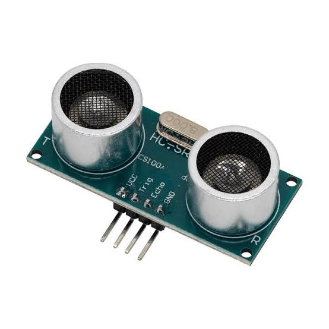

Detectores inteligentes para automação industrial
Um sensor de fim de curso é um dispositivo usado para detectar quando uma peça mecânica atingiu uma posição limite de movimento. É um componente essencial em máquinas industriais, portões automáticos, elevadores, esteiras e sistemas de automação.
Quando o elemento móvel atinge a posição programada:
✓ O sensor é acionado
✓ Seu contato elétrico muda de estado (NA ou NF)
✓ O controlador (CLP, relé ou microcontrolador) recebe o sinal
✓ Uma ação é executada, como parar um motor ou inverter o sentido de movimento
Acionados por contato físico direto. Mais simples e robustos. Ideais para ambientes hostis.
Detectam metais sem contato. Maior durabilidade. Sem partes móveis expostas.
Detectam qualquer material. Sensibilidade ajustável. Ótimo para materiais não-metálicos.
Baseados em luz. Excelente precisão. Ideal para aplicações de alta resolução.
